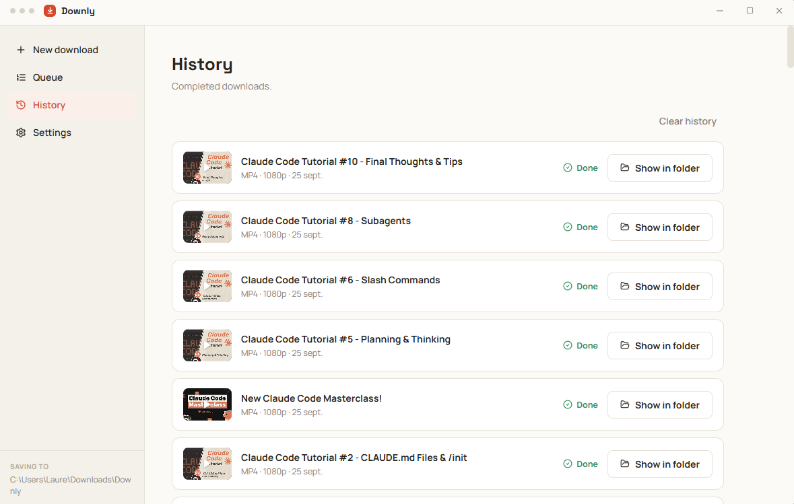
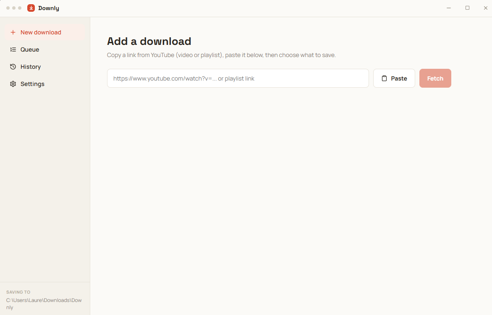
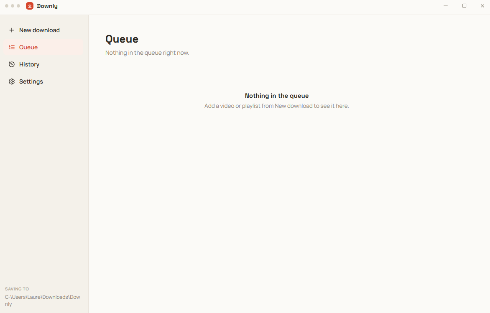
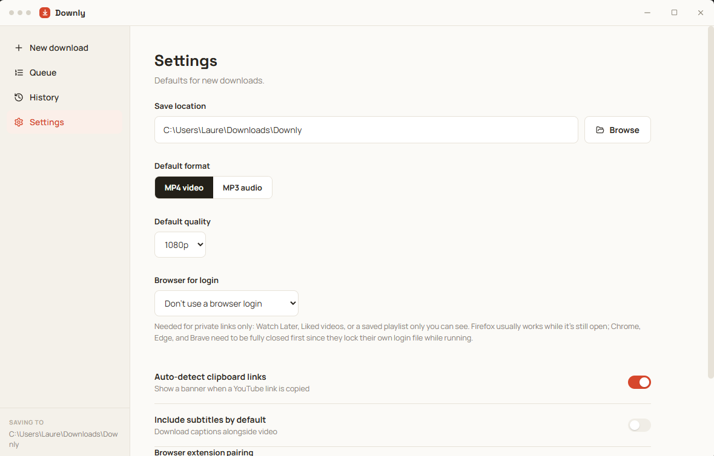

MP4 up to 4K
Pick 360p to 2160p. If a video isn't available in your quality, Downly takes the best one below.
Free desktop app · Windows & Linux
Paste a link, pick MP4 or MP3, and Downly does the rest: up to 4K, whole playlists, subtitles, and a queue that just works.

Downly is built on yt-dlp and ffmpeg, the tools the pros use, wrapped in an app anyone can use.
Pick 360p to 2160p. If a video isn't available in your quality, Downly takes the best one below.
Just the sound, in a smaller file. Great for music, talks and podcasts.
Paste a playlist link, tick the videos you want, and add them all at once.
Follow speed and time left, cancel or retry, and find every finished file with one click.
Save English captions as an .srt file next to your video.
Watch Later, Liked videos or your private playlists, using the YouTube login already in your browser.
Four pages, zero clutter.



Free, for 64-bit Windows and Linux.
Windows 10 and 11, 64-bit.
Installer (.exe) MSI for IT deploymentAny 64-bit distribution.
AppImage .deb for Debian / UbuntuChrome, Edge, Brave and other Chromium browsers.
Downly Companion (.zip) How to install itAll versions and release notes are on GitHub.
The Downly Companion extension adds a Download with Downly button to every YouTube video and playlist.
Download Downly-Companion.zip and unzip it in a folder you'll keep. Open chrome://extensions (or edge://extensions), turn on Developer mode, click Load unpacked and pick the folder.
In Downly, open Settings and copy the Browser extension pairing code. Click the extension's icon, paste the code, and hit Save. You only do this once.
On any YouTube video, click Download with Downly. It lands straight in your queue, with your default format and quality. If Downly is closed, it opens it for you.
Downly isn't signed with a paid certificate yet, so Windows SmartScreen warns about it. Click More info, then Run anyway.
The first time it runs, Downly downloads the tools it needs (yt-dlp, ffmpeg and a few helpers, about 300 MB). This happens only once. They stay in place when you update or reinstall.
Make it executable (chmod +x Downly-x86_64.AppImage) and install FUSE: sudo apt install libfuse2, or libfuse2t64 on Ubuntu 24.04.
Yes. In Settings → Browser for login, pick the browser where you're logged in to YouTube. Chrome, Edge and Brave must be fully closed while Downly reads the login; Firefox usually works while open.
Not yet. Downly currently supports 64-bit Windows and Linux.
Downly is a tool: what matters is what you download. Only save videos you have the right to keep, such as your own uploads, Creative Commons content, or videos whose owner allows it, and respect YouTube's terms and your local laws.